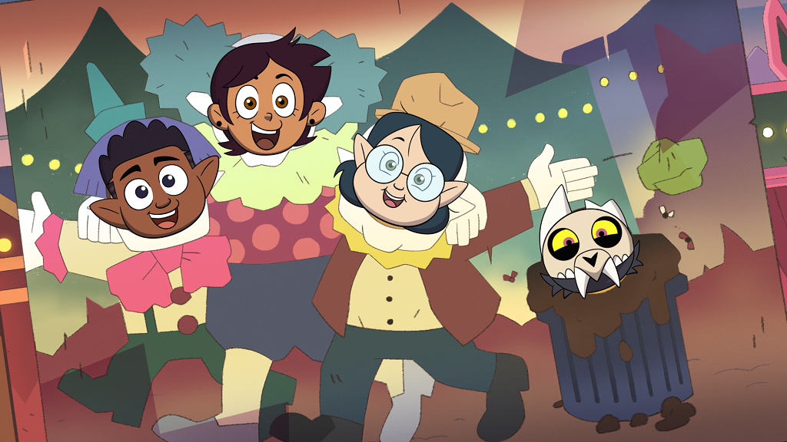
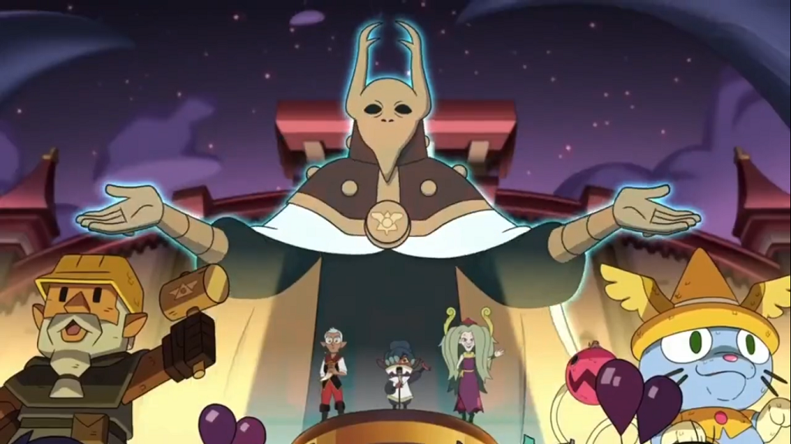
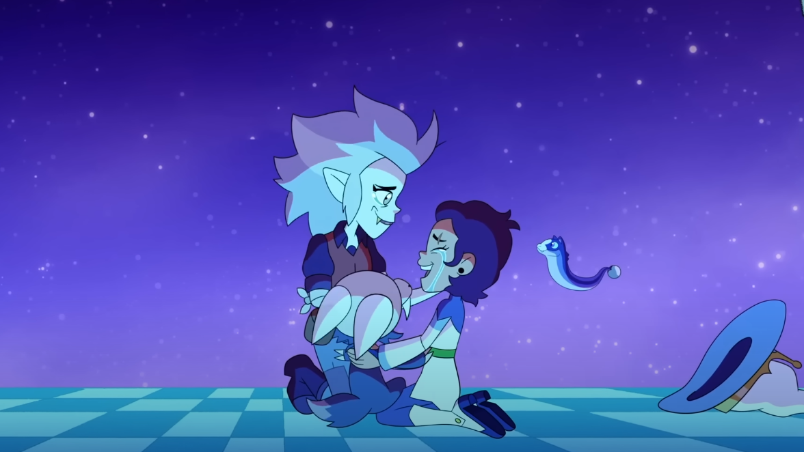

Coming January 21st 2023
1. A Lying Witch and a Warden (22min)
2. Witches Before Wizards (22min)
3. I Was a Teenage Abomination (22min)
4. The Intruder (22min)
5. Covention (22min)

6. Hooty's Moving Hassle (22min)
7. Lost in Language (22min)

8. Once Upon a Swap (22min)
9. Something Ventured, Someone Framed (22min)
10. Escape of the Palisman (22min)
11. Sense and Insensitivity (22min)
12. Adventures in the
Elements (22min)
13. The First Day (22min)

14. Really Small Problems (22min)
15. Understanding Willow (22min)
16. Enchanting Grom Fright (22min)
17. Wing It Like Witches (22min)
18. Agony of a Witch (22min)
19. Young Blood, Old Souls (22min)
1. Separate Tides (22min)
2. Escaping Expulsion (22min)

3. Echoes of the Past (22min)
4. Keeping Up A-Fear-Ances (22min)
5. Through the Looking Glass Ruins (22min)
6. Hunting Palismen (22min)
7. Eda's Requiem (22min)
8. Knock, Knock, Knockin' on Hooty's Door (22min)
9. Eclipse Lake (22min)
10. Yesterday's Lie (22min)

11. Follies at the Coven Day Parade (22min)
12. Elsewhere and Elsewhen (22min)
13. Any Sport in a Storm (22min)

14. Reaching Out (22min)

15. Them's the Breaks, Kid (22min)
16. Hollow Mind (22min)
17. Edge of the World (22min)
18. Labyrinth Runners (22min)
19. O Titan, Where Art Thou (22min)
20. Clouds on the Horizon (24min)
21. King's Tide (24min)
1. Thanks to Them (45min)
2. For the Future
(45min)

3. Watching and Dreaming (45min)